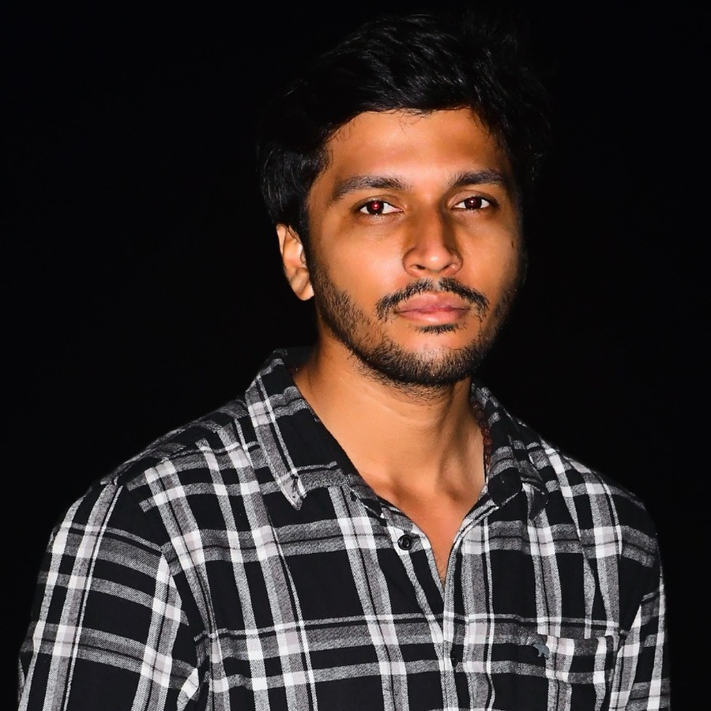
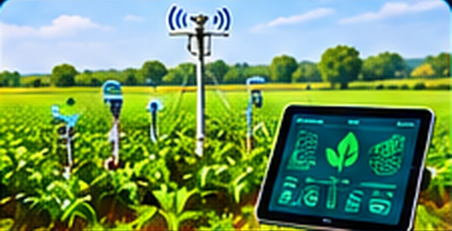
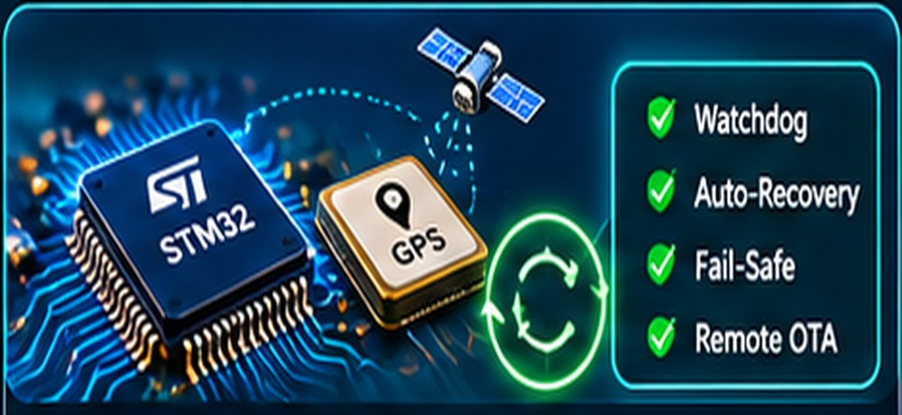
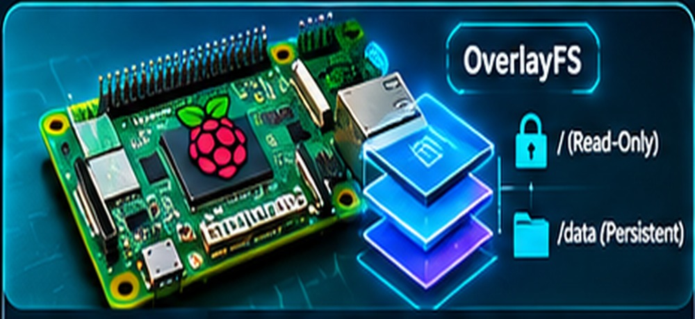
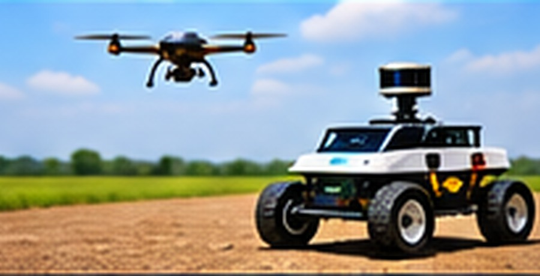

Sr. Firmware Engineer
Developing IoT solutions using Nordic nRF5340 / nRF52 and STM32. Working across BLE Mesh, MQTT, Azure OTA, LoRa, sensor integration and Edge AI/ML deployment.

FIRMWARE · IoT · EMBEDDED LINUX · EDGE AI
Building reliable, secure and intelligent embedded solutions for smart cities, industrial IoT, agriculture, defence and surveillance applications.
01 / PROFILE
Senior Embedded Systems Engineer with 3+ years of experience in firmware development, Embedded Linux and real-time systems. Hands-on expertise in sensor interfacing, OTA updates, communication protocols and system performance tuning.
I enjoy developing dependable end-to-end embedded products — from microcontroller firmware and hardware interfaces to wireless connectivity, cloud telemetry and field validation.
CORE EXPERTISE
02 / CAREER
Developing IoT solutions using Nordic nRF5340 / nRF52 and STM32. Working across BLE Mesh, MQTT, Azure OTA, LoRa, sensor integration and Edge AI/ML deployment.
Built a Debian Linux-based airport surveillance black box system, integrated sensors and custom PCBs, implemented MQTT over GPRS, and developed STM32 self-recovery logic.
Teaching, research and development work with engineering development boards and innovation projects.
Worked on autonomous robotics, ROS, LIDAR, obstacle avoidance, Pixhawk and sensor fusion.
03 / SELECTED WORK
Nordic-based master, slave and repeater nodes with vehicle detection, adaptive brightness, MQTT monitoring and OTA / Bluetooth DFU.

STM32-based irrigation and environmental monitoring with sensor acquisition, ONNX / TinyML inference and cloud-connected dashboards.
BLE beacon proximity estimation using RSSI, gateway-based movement tracking and LoRa backhaul for large public gatherings.
Linux and Balena OS platform for airport service vehicles, integrating GPS, ADXL345, CAN, MQTT telemetry and OTA updates.
Microcontroller-based protection against phase loss, phase reversal, overvoltage and overcurrent, with fault indication and field testing.

Watchdog-based recovery, startup diagnostics, MQTT health telemetry, GPS reporting and FreeRTOS task scheduling.

Read-only root filesystem, persistent data partition, system recovery scripts and GPIO-based factory reset support.

ROS, LIDAR, ultrasonic sensing, SLAM, PID control, Pixhawk and sensor-fusion-based obstacle avoidance.